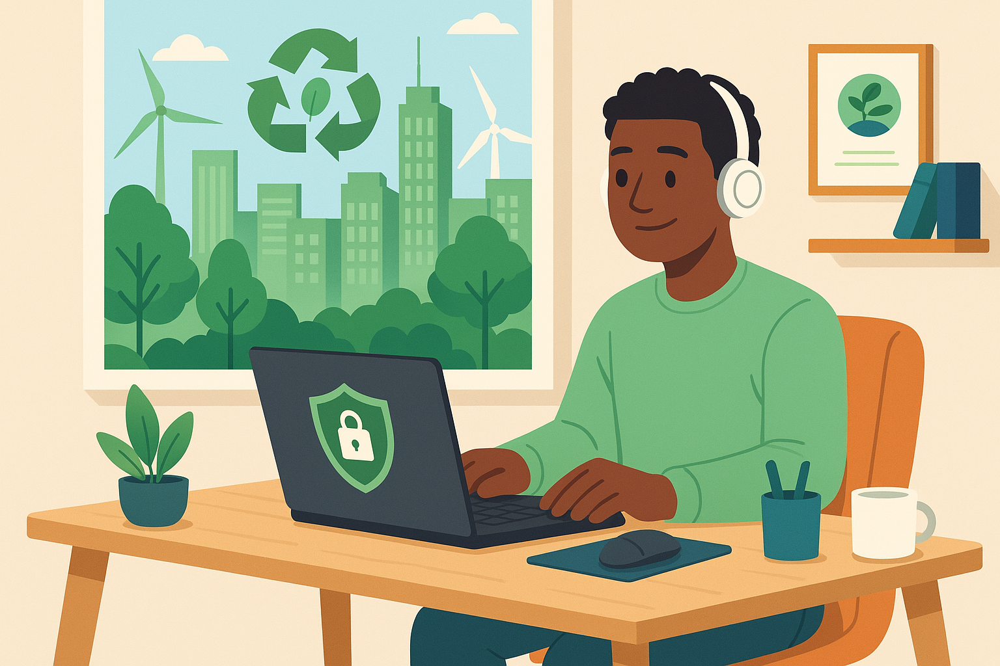
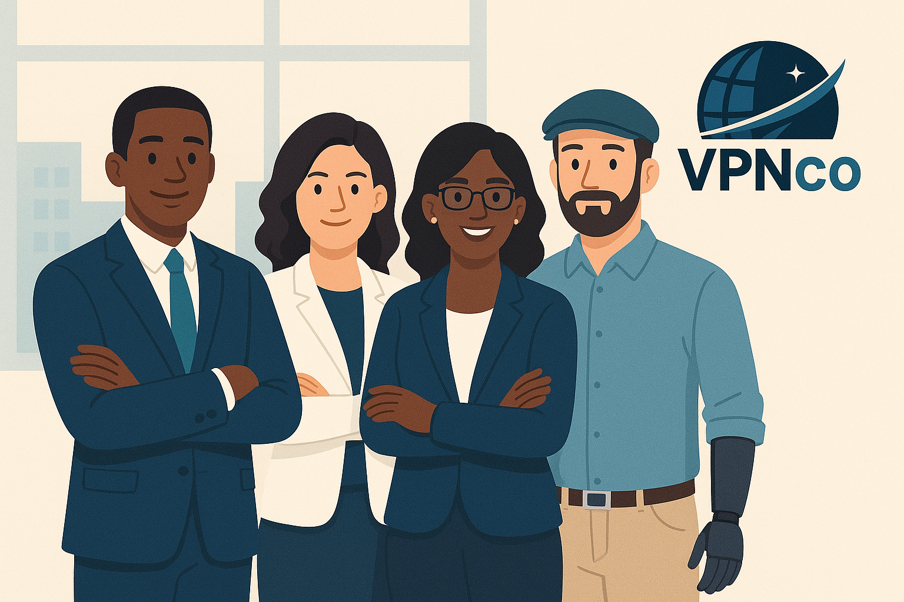

A VPNCO é uma consultoria especializada em Tecnologia da Informação, focada em oferecer infraestrutura inteligente para empresas que adotam o modelo remoto. Nossas soluções combinam segurança, eficiência e compromisso com a sustentabilidade.
Na VPNCO, combinamos tecnologia de ponta com responsabilidade ambiental para garantir acesso remoto seguro, eficiente e moderno.
O modelo de trabalho remoto vem se consolidando como uma prática eficiente e sustentável para empresas que buscam inovação e redução de custos. Ao adotar soluções de VPN com suporte profissional, sua organização garante a continuidade dos processos mesmo fora do ambiente físico. A VPNCO oferece uma estrutura completa que une desempenho, segurança e responsabilidade ambiental, promovendo um ambiente de trabalho flexível e moderno, sem abrir mão da produtividade e da colaboração entre equipes.
Somos uma consultoria em TI comprometida com a evolução das empresas por meio de soluções tecnológicas sustentáveis. Nascemos com o objetivo de auxiliar organizações na transição para o modelo home office, garantindo segurança, mobilidade e eficiência.
A tecnologia precisa ser invisível, eficiente e segura. Com a estrutura da VPNCO, seus colaboradores podem acessar sistemas internos e plataformas empresariais de forma rápida e protegida, independentemente de onde estiverem. Trabalhamos com protocolos avançados de criptografia e autenticação, garantindo a confidencialidade e integridade das informações trafegadas. Além disso, nosso suporte técnico é proativo e personalizado, permitindo que sua empresa opere com tranquilidade em um cenário de transformação digital constante.
Projetamos, implementamos e gerenciamos redes privadas virtuais seguras para acessos remotos com alto desempenho.
Consultoria especializada em reduzir impactos ambientais por meio de soluções tecnológicas verdes.
Proteção de dados sensíveis, criptografia de ponta e boas práticas de segurança digital.
Na VPNCO, acreditamos que tecnologia também é inclusão. Ao permitir o trabalho remoto estruturado, promovemos oportunidades iguais para colaboradores com diferentes perfis, habilidades e localizações. A infraestrutura remota abre portas para a diversidade ao reduzir barreiras físicas e geográficas. Nossa missão é conectar talentos à produtividade, por meio de um ambiente digital seguro, acessível e adaptado às necessidades de cada pessoa — tudo isso sem comprometer a qualidade, a governança e os objetivos estratégicos da empresa.
Quer implementar uma solução segura e sustentável para sua empresa? Preencha o formulário abaixo e nossa equipe entrará em contato.
Você está pronto para transformar a forma como sua empresa trabalha? Com a VPNCO, a sua organização poderá operar de forma descentralizada, com alto nível de segurança, economia de recursos e maior satisfação dos colaboradores. Estruturamos seu home office com base em práticas ESG, alinhando eficiência operacional à sustentabilidade e à responsabilidade social. Entre em contato com nossa equipe e descubra como podemos ajudar seu negócio a evoluir com tecnologia, mobilidade e inovação real.